I make a new release of my Cantonese Artificially-intelligent Phonetic (CAP) input method. This includes a Mac OS X version for Mavericks and Yosemite, compatibility with latest Kubuntu/Ubuntu/Debian Linux distributions, and an updated statistical language model (that includes words like 雨遮革命 and 鳩嗚, and proper nouns like 黃之鋒)! This article describes where to download and how to install it.
Click on a link in the Filename column of the following table to download a new version of the CAP input method for your platform. The values in the third column are MD5 checksums of these files.
| OS | Filename | MD5 Checksums |
|---|---|---|
| Debian | ibus-cap_1.0_amd64.deb |
8246a6903b76420c7bcd7bf83a401af8 |
| Mac OS X | Chinese - Cantonese AI Phonetic IM.zip |
914cb88f64aade01bc20b823830e971b |
| 32-bit Windows | cap-Win32.msi |
745cf35b900d58898fcd35deeb7db912 |
| 64-bit Windows | cap-x64.msi |
5aa949f5081c6b0f53e9ce73c9e17e87 |
When you download one of these files, Google Drive (where it is stored) will warn you that it can’t scan the file for viruses because of (large) file size. Each file is built on my computers, then uploaded directly to Google Drive, and therefore should be safe. If you feel the need to, check the downloaded files’ MD5 checksums before installing. The additionally cautious can scan with whatever anti-virus tools on their computers after downloading. To proceed when prompted by Google Drive, click Download anyway.
The Debian version has been tested on 64-bit Kubuntu 14.04. It should work on 64-bit Kubuntu, Ubuntu, and Debian, version 14.04 and above. The alien command can be used to convert the .deb package into a .rpm package for installation on Red Hat Linux distributions and derivatives. For information on the installation and use of CAP on Linux, read the original release article. This version currently still has a few bugs and occasionally hangs. When that happens, right click on the keyboard icon in the system tray and choose Restart.
The 32-bit and 64-bit Windows versions will work on the respective versions of Windows 7. They won’t work or will work only marginally on Windows 8. Read the Windows version release article for information on the installation and use of CAP on Windows.
The Mac OS X version of CAP has been tested on both Mavericks and Yosemite.
Here is how to install CAP on Mac OS X.
Download the zip file Chinese - Cantonese AI Phonetic IM.zip.
If your web browser doesn’t automatically unzip it, double-click on the zip file to obtain an application bundle named Chinese - Cantonese AI Phonetic IM.
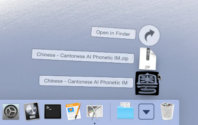
Move this file into the hidden folder ~/Library/Input Methods/. To access this folder, in the Finder, select “Go -> Go to Folder…” and type this folder’s name. If you have an older version of this input method, first move that version out onto the desktop before moving the new version into the folder.
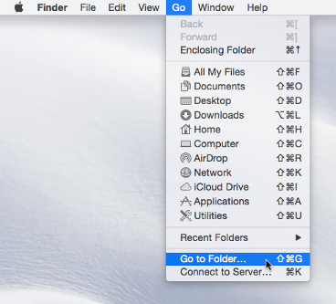
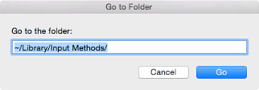
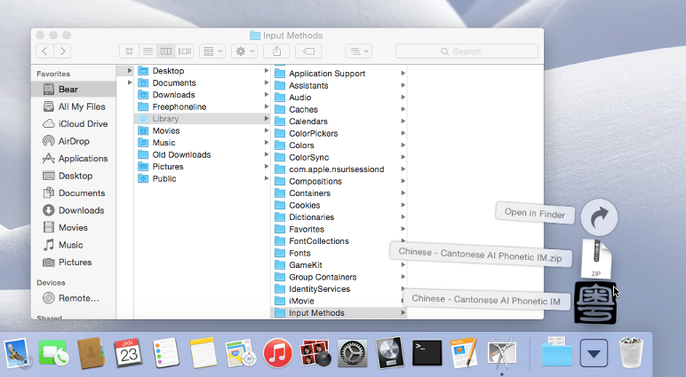
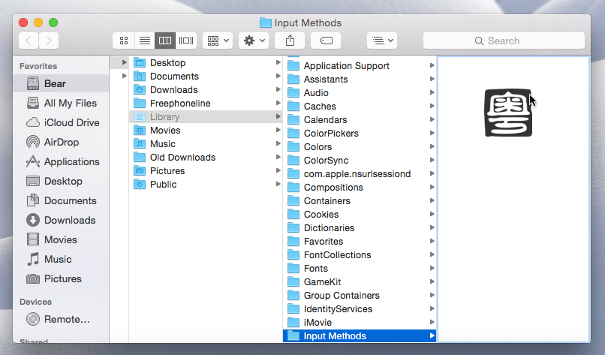
Log out, then log in (alternatively, restart). Open the Keyboard preferences panel; select the Input Sources tab. Click +. Under Chinese, Traditional, select Chinese - Cantonese AI Phonetic IM and click Add.
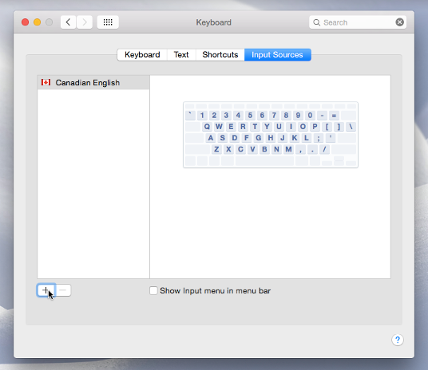
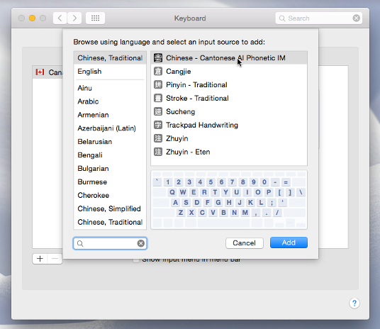
Since the CAP input method isn’t signed, in its default settings, OS X’s Gatekeeper will prompt you to explicitly allow CAP’s execution the first time it is opened. To avoid this, open the Security & Privacy preferences panel; select the General tab. If it isn’t already unlocked, click on the lock icon labeled Click the lock to make changes and type your password. Temporarily select Anywhere under Allow apps downloaded from:. When a dialog appears, click Allow From Anywhere.
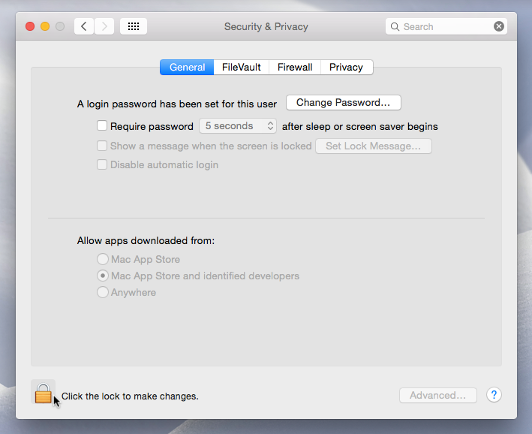
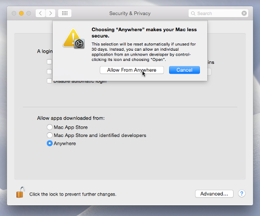
Open any application that lets you type text, such as TextEdit. Select the Chinese - Cantonese AI Phonetic IM input method from the input method menu (upper-right corner of screen).
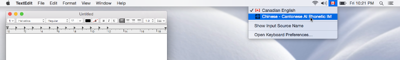
The following dialog should appear:
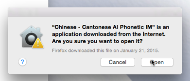
Click Open. From here on you should be able to use the input method without any further alerts from OS X.
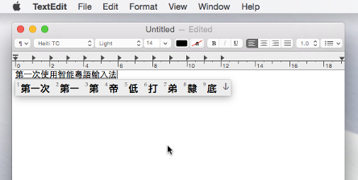
Important: at this time you should go back to the Security and Privacy preferences panel, General tab and set Allow apps downloaded from: to its previous, safer value.
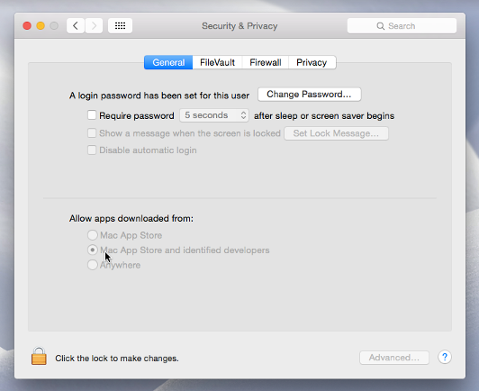
For instructions on the use of input method, read the original CAP article.
The OS X, Linux, and Windows versions should all work very similarly.
Again, I don’t really have much interest or sufficient time and resources to provide “user support” for CAP. So please please please use it only if you know enough about Mac OS X, Linux, or Windows to solve most problems on your own. Don’t be surprised if I don’t reply to your Email containing questions that I think can be answered by a little experimentation. Thank you for your understanding.
For detail CAP licensing information, read the file Chinese - Cantonese AI Phonetic IM.app/Contents/Resources/LICENSE within the Mac OS X application bundle. To summarize:
You can only use it for personal and non-commercial purposes. The and in the previous sentence is a logical conjunction, so no site installation at any type of organizations.
You may not redistribute it. I’m the only person in the world who can distribute this software.
I’m not liable for any damages it may cause (although I don’t intend nor expect it to cause any).
Have fun!
Category: Programming